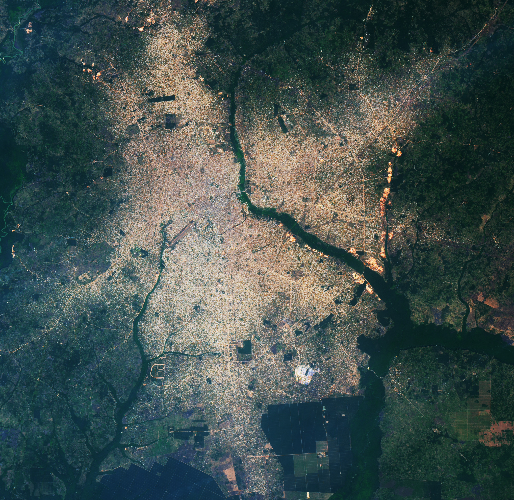

Rapid Growth for Benin City
Home to nearly 240 million people, Nigeria is Africa's most populous country. About twice as many people live there as in Ethiopia, Egypt, the Democratic Republic of the Congo, and Tanzania—the next four largest countries—and demographers expect the population to grow by another 130 million by 2050.
A substantial portion of that growth will occur in Lagos, a megacity of 17 million on the southwestern coast that could become the world's most populous city by 2100. But Nigeria is also home to 85 other "secondary cities" with 100,000 or more residents. Urbanization specialists expect some of the fastest growth rates in Africa and the world to occur in these smaller cities, explained Jody Vogeler, a Colorado State University researcher who uses satellites to study urbanization trends in Africa.
Benin City is a textbook example of a rapidly growing secondary city. Once the seat of government for the historical Kingdom of Benin—a precolonial West African state that thrived between the 1200s and 1800s—the city's population has boomed from about 350,000 in 1980 to more than 2 million in 2025.
Remote sensing has tracked a surge in developed land alongside population growth. The ETM+ (Enhanced Thematic Imager Plus) on Landsat 7 captured an image in 2002, when the population was roughly one million. By the 2020s, developed land had nearly doubled, and vegetated areas in the city declined by more than 650 square kilometers (250 square miles). The OLI-2 (Operational Land Imager-2) on Landsat 9 captured the 2025 image on January 11.
Dark green areas surrounding the city are Nigerian lowland forests, a type of rainforest with hundreds of tree species and abundant wildlife. Lighter green areas are mainly agricultural fields, shrublands, or savannas. Bare soils appear red due to laterite—an iron- and aluminum-rich soil that turns red when exposed to air and water. Bright linear features in the image are new roads, often built using laterite for initial construction.
Rapid rural-to-urban migration fueled the city’s expansion. Economic opportunities, education, public administration, manufacturing, mining, and transportation all contributed to growth. Benin City hosts the University of Benin, serves as the capital of Edo state, and functions as a hub for sand, rubber, and aluminum production.
Landsat’s long record has allowed scientists to monitor more than just expansion. Over 25 years, researchers have measured the urban heat island, assessed topographic changes due to urbanization and erosion, and gauged flood risks across the city.
Satellites also help map the distribution of informal settlements—unplanned clusters of small buildings on irregular plots that often lack access to basic services such as water, sanitation, and electricity. By one estimate, about 45% of Nigeria's urban population lives in informal settlements. The University of Chicago’s Million Neighborhoods project combines Landsat data with other datasets to identify underserved communities across Nigeria and Africa.
Vogeler’s lab has developed an automated technique for delineating city boundaries, extending beyond administrative lines to include both planned and unplanned areas functionally part of the city. Land-cover maps for Benin City and other cities in Ethiopia, Nigeria, and South Africa provide tools for urban planners and researchers to understand how cities are evolving, supporting the United Nations' sustainable development goals.